EnterpriseAI
Selbst betriebene KI-Assistenz — auf eigener Hardware, ohne Cloud.

Installation
Ein Befehl. Sicherheitsschlüssel, Zertifikat und Datenbank entstehen selbst.
Unternehmen
Name, Betreiber, Farbe und Sprache — im Browser, ohne Neustart.
Module
Was diese Installation anbietet, entscheidet der Administrator.
Rechte & Einstufung
Vier Vertraulichkeitsstufen, durchgesetzt bis in die Suche.
Worum es geht
EnterpriseAI ist eine KI-Assistenz für Unternehmen, die vollständig auf eigener Hardware läuft. Chat gegen ein lokales Sprachmodell, Dokumentenanalyse, firmeneigenes Wissen mit Belegen — ohne dass etwas das Haus verlässt.
Das ist keine Beteuerung, sondern eine Eigenschaft des Aufbaus: Es gibt keine externen Schnittstellen. Kein API-Schlüssel, kein Anbieter, kein Datenabfluss, den man später entdecken könnte.
Was es kann
| Bereich | Inhalt |
|---|---|
| Chat | Streaming-Antworten, Werkzeugaufrufe, Gesprächsverlauf, Freigabe einzelner Chats. |
| Dokumente | PDF, Word, Excel, CSV, Bilder, Quelltext. Texterkennung für Scans, damit auch nicht durchsuchbare PDFs nutzbar werden. |
| Wissens-Vault | Firmenweite Notizen und Dokumente mit Wiki-Verlinkung. Hybride Suche über Vektor und Stichwort. |
| Projekte | Bündeln Chats, Dateien und Vorgaben; Projektwissen fließt automatisch in jeden Chat des Projekts. |
| Gedächtnis | Merkt sich wiederkehrende Fakten über Nutzer und Projekte. |
| Etikettenprüfung | Prüft Druckdaten gegen eine Liste unzulässiger Aussagen — per Texterkennung, offline. |
| Betrieb | Änderungsprotokoll, Auswertung, Rückmeldungen, Monatsbericht als PDF. |
Belegte Antworten
Antworten aus dem Wissens-Vault nennen ihre Quelle. Das ist kein Beiwerk: eine KI, die plausibel klingt und nicht belegen kann, woher etwas stammt, ist im Betrieb wertlos — man müsste jede Aussage nachprüfen und hätte nichts gespart.